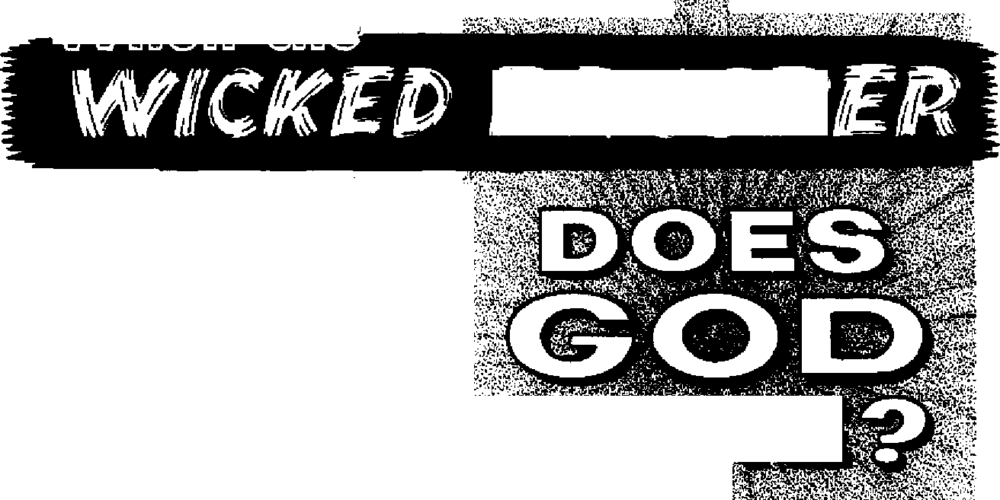
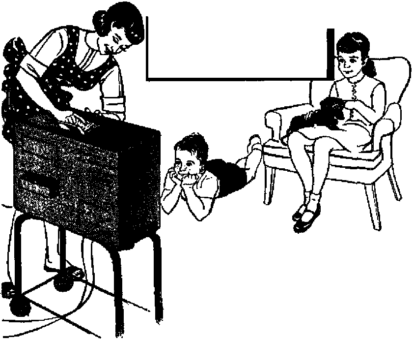

When the Wicked Prosper, Does God Care?
PAGE S
The Use and Abuse of Television
PAGE 9
Winged Creatures with a Role to Play
PAGE IB
Anthem Case Decided in Favor of Freedom
16
DECEMBER 22. 1963
THE MISSION OF THIS JOURNAL
News sources that are able to keep you awake to the vital Issues of our times must be unfettered by censorship and selfish interests. "Awa kef’ has no fetters. It recognizes facts, faces facts, is free to publish facts. It is not bound by politico! ambitions or obligations; it is unhampered by advertisers whose toes must not be trodden on; it is unprejudiced by traditional creeds. This journal keeps itself free that it may speak freely to you, But it does not abuse its freedom* It maintains integrity to truth.
"AwakeT uses the regular news channels, but is nat dependent on them. Its own correspondents are on all continents, in scores of nations. From the four corners of the earth their uncensored, on-the-scenes reports come to you through these columns. This journal's viewpoint is not narrow, but is international. It is read in many nations, in many languages, by persons of all ages. Through its pages many fields of knowledge poss in review—government, commerce, religion, history, geography, science, social conditions, natural wonders—why, its coverage is os broad as the earth and as high as the heavens.
"Awokel” pledges itself to righteous principles, to exposing hidden foes ond subtle dangers, to championing freedom for all, to comforting mourners and strengthening those disheartened by the failures of a delinquent world, reflecting sure hope for the establishment of a righteous New World.
Get acquainted with “Awake!’1 Keep awake by reading "AwakeI"
n—W ■ w an -w ■
Published Semimonthly by
WATCHTOWER BIBLE AND TRACT SOCIETY OF NEW YORK, INC. 117 Adams Street Brooklyn, N.Y. 1T2Q1. U.S.A.
N. H. Knorb, President Grant Surra*. Secretary
Printing this Issue; 8,800,000
Five cents a copy
“AwbJw!” h pablliM In th* 25 Isngiapn:
StmlHtirthlf—Afrikaans. Clnyanja, Danish, Dukl). Kn-glbth, Finnish. French, German, Greek, Julian. Japanese, Korean, Norwegian, Portuguese. Spanish, Swedish. Tagalog, &du.
■dsthly—Cebu-VLaayan, Chinese, IlAcano, Malayalam, Polish, Tamil, Ukrainian,
Teirly subscription rates Iffltn for aemlmonlhly editions
Amrita, U.8., II" Adama St. Brooklyn, N.Y. 11201 SI A*ltraliaT 11 Beresford Rd., Strathfield, N.8.W,
Canada, 150 Bridgeland Are., Toronto 10, Ont $1 England, Watch Tower House,
Ntw Znlari, 631 New North Rd,, Auckland. B.W, 1
8mth Afrfaa, private Bag 2, P.O. EUn&ftniteln, Tri 70c Monthly edfttons coal half the shore raid.
Ita Ittantes for BUbflerlptlons should be sent to th* office In yuur cotmlry. Otherwise send y&uf rmllunce to Brooklyn, Not Im *1 expltatltn lo sent at least two issues before utibacrlirtloti expires.
changes of address sfrMld reach Mt thirty dan to fore your moving date. Give n jo*r old and new addreti (If wow i He, yoar old iddre» label}. Write wrtahtoww, 117 Adams Street, Brooklyn, New York 11801, U.S.A,
Secnnd-elasB postage paid at Brooklyn, N.Y. Printed in L^.A,
The Blbl* translatfa ewd In ''Anke!" Ii the New Wtrid Translation wf the Holy Serlpterw, 1961 edition. When ether translation are Dead the following eyrbali will appear behind the eltatfona:
AS - American Standard Version AT - An American Translation AV - Auttuxlaed Version (1(111) Da - J. N. Darby's versiou
Dy — Catholic Dotiay version ED - The EmphaUc DiagJott JP - Jewish Publication Sec. Le - Isaac Letser'a version
Mo - James Moffatt's version Ro - J. B. Eolherham's version RS - Revived SUiirtanl Version Yp - Robert Tcung’s version
CONTENT S
When the Wicked Prosper,
TTie Use and Abuse of Television
Winged Creatures with a Role to Play 13 Anthem Case Decided in Favor
Anglican Congress—Did It Meet
Angkor—Lost City of the Jungle
Three-Way Disaster Strikes Brazil's “Breadbasket”
‘'Your Word Is Truth”
Reason Along with the Bible Writer Watching the World
Volume XLIV Brooklyn, N. V., December 22, 1963 Number 24
IT WAS cool and overcast on the morning of September 15 in Birmingham, Alabama. Sundayschool classes were just concluding in the basement of the large yellowbrick 16th Street Baptist Church. Suddenly the calm was shattered by a terrific explosion that ripped a hole in the wall, blew out stained-glass windows and sent glass and splintered debris everywhere. As the air cleared, scores of terrified children began pouring out of the entrances, some were screaming and others were moaning and bleeding. Four little girls, however, did nol^utter a sound. They were buried beneath the debris—dead.
The shock waves from the bomb blast in this Birmingham Negro church quickly reverberated from one end of the country to the other, with powerful echoes being heard around the world. Why? Who is responsible for the senseless murder of these innocent Negro children? Is this the fruitage of a Christian society? Such are the questions that are still in the minds of millions of persons. In its weekend review of the news, the New York Times observed: “Americans everywhere turned toward Birmingham and asked why, what was it that made it seemingly impossible for whites and Negroes to live together here in peace T*
There are, of course, many conflicting opinions as to who is to blame for the race troubles that culminated in the church bombing. The United States president, J. F. Kennedy, pointed to the “public disparagement of law and order” as being responsible for the “violence which has fallen on the innocent.” He evidently was making reference to the failure of public officials and citizens to comply with the Supreme Court's decision outlawing segregation. However, the former police commissioner of Birmingham, Eugene Connor, told a large gathering in Mobile, Alabama, that “if you're going to blame anyone for getting those children killed in Birmingham, it’s your Supreme Court.”
Editorials in various Alabama newspapers recognized that the people, and not the law, were at fault. Many share the blame, the Talladega Daily Home said, including “all the rioters and all the demonstrators, black and white, who have so scoffed at the law in weeks and months gone by.” And the Huntsville Times agreed: “Many people in Alabama are partly to blame for the Sunday bombing. In the final sense, the attitudes of the many who have felt that the end justifies almost any means are in large measure responsible.”
Perhaps the most pointed remarks of all were those of a white Birmingham lawyer named Charles Morgan, Jr. According to Life magazine, what he said before a segregated meeting of the Young Men’s Business Club was this:
“Who did it? It’s really rather simple. The 'who’ is every little individual who talks about the ‘niggers’ and spreads the seeds of his hate to his neighbor and his son. The ‘who’ is every governor who ever shouted for lawlessness and became a law violator. It is every senator and every representative who in the halls of Congress stands and with mock humility tells the world that things back home aren’t really like they are. It is courts that move ever so slowly and newspapers that timorously defend the law. It is all the Christians and all their ministers who spoke too late in anguished cries against violence. It is the coward in each of us who clucks admonitions. We are 10 years of lawless preachments, 10 years of criticism of law, of courts, of our fellow man; a decade of telling schoolchildren the opposite of what the civics books say. We are a mass of intolerance and bigotry and stand indicted hefore our young. We are cursed by the failure of each of us to accept responsibility, by our defense of an already dead institution.
“Who is really guilty? Each of us. Each (jitizen who has not consciously attempted to bring about peaceful compliance with the decisions of the Supreme Court; each citizen who has ever said, ‘They ought to kill that “nigger.” * Every person in this community who has in any way contributed to the popularity of hatred is at least as guilty, or more so, as the demented fool who threw that bomb.”
What is it in humans that breeds such deep feelings against another race, to the extent that they violate the integration laws of the country? Is it their love for God and His Word the Bible? By no means! For God does not favor one race over another because of skin color. His Word plainly says that “God is not partial,” and that he “does not go by a man’s outward appearance.” “God . , . made out of one man every nation of men, to dwell upon the entire surface of the earth.” —Acts 10:34; Gal. 2:6; Acts 17:24-26.
Disregard for God’s law to love your neighbor as yourself,’ regardless of race or color, springs from deeply engrained teachings and beliefs. Such false teachings lead to hatred, strife, and in the past have culminated in bloody wars. But instead of pointing to the failings of others, would it not be much wiser to examine our own feelings and attitudes? Are our hearts clean from prejudice? Do we have genuine love for all races and nationalities of people?—Matt. 22:39.
How about other laws of God and man? God’s Word commands wives to be in subjection to their husbands. (Col. 3:18) Are you, if you are a wife? Do you comply with your husband’s decisions and work whole-souled to ensure their success? Governments make many laws that are not in conflict with God’s laws, but which may not be to the liking of individuals. There are tax laws, safety laws, building requirements, and so forth. Do you comply with all such duly constituted legislation, or do you rebel against it? Minor infractions of the law open the way to more serious violations.
In Birmingham failure to comply with the laws that govern the country has led to strife and bloodshed. This situation, Alabama’s Anniston Star editorialized, “should serve as a grim warning to all that lawlessness, disregard for duly constituted law and its enforcement breed disorder and wanton recklessness that makes no person or no place safe and secure.”
Whe.n-the
■ft-
If he cares, why does he allow the wicked to prosper? Will he always?
IF AN upright citizen in your community were foully murdered, would you be alarmed? If the murderer continued to grow prosperous, would you be outraged? Undoubtedly you observe that racketeers grow rich, unscrupulous persons in business and politics prosper, and evil men gain dictatorial power over great masses of people. In the world today corruption, violence and wickedness
PROSP
S^^lUfiEL
continue to be practiced. It is evident that the wicked are prospering.
Seeing this, some righteously disposed persons ask, Does God care? How can an all-wise, loving and righteous God tolerate wickedness so long? Lik*3 Job and Jeremiah of ancient times, some ask: "Why is it that the wicked themselves keep living, have grown old, also have become superior in wealth?” “Why is it that the way of wicked ones is what has succeeded, that all those who are committing treachery are the unworried ones?” Appropriate questions these!—Job 21:7; Jer. 12:1.
Some answer that God allows the wicked to prosper to teach men the bad effects thereof. But would a sane parent allow someone to murder some of his children so as to teach the others not to kill? Would a man offer rewards to coarse lechers to violate his daughters and thereby teach them virtue? Preposterous! God does not allow wickedness to teach people goodness! There has to be some other explanation of why God allows the wicked to prosper, for, as the Hebrew prophet
Habakkuk said to Jehovah: “You are too pure in eyes to see what is bad; and to look [approvingly] on trouble you are not able?' —Hab. 1:13.
Habakkuk Questions God
Although he was convinced of Jehovah’s righteousness, Habakkuk was nevertheless puzzled and distressed because of the suffering of the lowly ones at the hand of oppressors. Evidently, at the time Habakkuk wrote, faithful King Josiah had died, and, due to poor administration of affairs by his wicked son Jehoiakim, conditions in Judah had become very bad. “Therefore law grows numb, and justice never goes forth. Because the wicked one is surrounding the righteous one, for that reason justice goes forth crooked.” Such injustice troubled Habakkuk.—Hab. 1:1-4.
At the same time the rapacious Chaldeans, or Babylonians, had started on the rampage, terrorizing peoples all around. They despoiled other nations, and prospered at their expense. That wicked ones should appear to have the best of everything perplexed Habakkuk; so he inquired of God: “Why is it that you look on those dealing treacherously, that you keep silent when someone wicked swallows up someone more righteous than he is?”—Hab. 1: 5-13.
Yes, Habakkuk wanted an answer from God himself. When the wicked prosper, do you care, Jehovah? Habakkuk kept himself stationed at his guard post watching to see what God would speak. To get reasonable and satisfying answers we must likewise be watchfully attentive to God’s Word.—Hab. 2:1.
Before considering God’s answer to Habakkuk it is important that we understand that God is not responsible for the wickedness in the world. The Bible explains that “God made mankind upright/’ in His image and likeness, “but they themselves have sought out many plans?’ “They have acted ruinously on their own part; they are not his children, the defect is their own. A generation crooked and twisted!”—Eccl 7:29; Deut. 32:5.
True, mankind has had to suffer a great deal through the centuries because of the wickedness of wayward men who have rejected God’s Word. But, remember, Jehovah is not responsible for their badness. The selfish spirit creature Satan the Devil is the one that has been stirring up violence and trouble in the earth. And while Jehovah does not snatch his faithful servants away from these wicked conditions, he does give them guidance and comfort, even as he did Habakkuk. So it will be to our benefit to consider what Jehovah told Habakkuk in answer to his inquiry.
God’s Answer to Habakkuk
Habakkuk was sorely troubled over the injustice in his day, so God gave him a vision in which he assured Habakkuk that the prosperity of the wicked was only temporary. “For the vision is yet for the appointed time, and it keeps panting on to the end, and it will not tell a lie. Even if it should delay, keep in expectation of it; for it will without fail come true. It will not be late?1—Hab. 2:3.
There is an appointed time for meting out punishment to the wicked and, even though that time should appear to delay, it will without fail come on schedule, Jehovah promised. He went on to assure Habakkuk that even though the unrighteous one’s “soul has been swelled up” and he becomes self-assuming, “he will not reach his goal, he who has made his soul spacious just like Sheol, and who is like death and cannot be satisfied. And he keeps gathering to himself all the nations and collecting together to himself all the peoples?’—Hab. 2:4,5. ,
In Habakkuk’s day the oppressive military power of Babylon was like an ablebodied man that kept “gathering to himself the nations and collecting together to himself all the peoples?' Yet, those nations and greedy men that conquer and oppress others to appease their selfish appetite for power and riches are like Sheol and death, in that they are never satisfied, but are always looking for more.—Prov. 27:20.
On the other hand, Jehovah showed that, “as for the righteous one, by his faithfulness he will keep living?’ (Hab. 2:4) By inserting this statement, God emphasized the importance of faithfulness in the face of the flourishing of wickedness and the apparent prosperity of evildoers. Yes, in the end it is the righteous one who remains faithful that will receive the reward of life. The Christian apostle Paul repeatedly quoted this text in his letters to emphasize to Christians their need of faith.—Rom. 1:17; Gal, 3:11; Heb. 10:38.
Jehovah’s vision to Habakkuk next records the proverbial saying that one took up against those who prosper at the expense of others. "Woe to him who is multiplying what is not his own—O how long! —and who is making debt heavy against himself! Will not those claiming interest of you rise up suddenly, and those wake up who are violently shaking you, and you certainly become to them something to pillage? Because you yourself despoiled many nations, all the remaining ones of the peoples will despoil you, because of the shedding of blood of mankind.”—Hab. 2:6-8.
How true Jehovah's vision proved to be! Peoples often rise up and throw down oppressive rulers that despoil and fill the earth with bloodshed. Evildoers reap what they sow. In a very short time Babylon herself was despoiled, even as she had despoiled others. And in our day Hitler, Mussolini and Trujillo are among persons that pillaged others, only to be pillaged themselves. And if the revolutioi iry elements among the people themselves do not do it, Jehovah will see to it that tl 2 wicked are punished for their wickedness.
Jehovah revealed this to Habakkuk in the vision he gave him. After pronouncing "woe to the one that is making evil gain for his house,” and "to the one that is building a city by bloodshed, and that has solidly established a town by unrighteousness!” the inspired account goes on to show what Jehovah will do to such ones: "Look! Is it not from Jehovah of armies that [those wicked J peoples will toil on only for the fire, and that national groups [who oppress the lowly] will tire themselves out merely for nothing?”—Hab. 2:9-13.
Here Jehovah assures Habakkuk that he would see to it that oppressors, like the Babylonians, would receive an accounting. In keeping with this vision, through the contemporary prophet Jeremiah he explained what would happen to the rapacious Babylonians: "This is what Jehovah of armies has said: ‘The wall of Babylon, although broad, will without fail be demolished; and her gates, although high, will be set aflame with fire. And the peoples will have to toil for simply nothing, and national groups simply for the fire; and they will just tire themselves out? ” Jehovah brought execution upon the selfconfident Babylonians by the hand of the Medes and Persians in 539 B.C.E. just as he foretold.—Jer. 51:11, 12, 58.
Repeatedly in his answer to Habakkuk Jehovah emphasized that evildoers will not get away with their evildoing. Eventhough the meting out of justice appears to delay, it will come on schedule. This should serve as a warning to any that may think they can get away with wrongdoing. The vision to Habakkuk particularly takes note of evil persons that make their companions drunk "for the purpose of looking upon their parts of shame.” One that tries to weaken another's resistance so as to make immoral advances toward that one will have to answer to Jehovah. And "the cup of the right hand of Jehovah will come around to” them, and they will be disgraced.—Hab. 2:15, 16.
In the day of judgment upon such evildoers their religiousness will not benefit them at all. The Babylonians were a very devout people who looked to their religious idols for protection and blessings. Yet Jehovah said: “Of what benefit has a carved image been, when the former of it has carved it, . . . when the former of its form has trusted in it, to the extent of making valueless gods that are speechless? Woe to the one saying to the piece of wood: (O do awake!’ to a dumb stone: ‘O wake up! It itself will give instruction’! fjook! It is sheathed in gold and silver, and there is no breath at all in the midst of it.”—Hab, 2:18,19.
Just as their religious idols did not save the Babylonians when the time came for God’s execution upon them, so neither can anyone today do evil deeds, and still think he can escape God’s judgment by attending religious services or by performing some acts of worship. “Jehovah is in his holy terhple” watching, and if one would escape destruction he must practice the clean, pure worship of Jehovah, “rendering him sacred service day and night in his temple.”—Hab. 2:20; Rev. 7:15.
What an assuring and comforting answer Habakkuk received from Jehovah! God does care when the wicked prosper, and in no uncertain terms He revealed that in his appointed time they would be dealt with.
The Appointed Time Is at Hand!
Jehovah’s answer to Habakkuk is actually a prophecy that has its grand, climactic fulfillment when Satan and his entire wicked organization will be despoiled and given to the fire. Down through the centuries this organization of wickedness has ruled the earth and oppressed the peoples. It has accumulated heavy debt against itself. Jehovah has observed and patiently waited, allowing sufficient time for Satan to try to carry out his boast that he could turn all mankind into the ways of wickedness.
In the meantime Jehovah counsels his people: “Do not avenge yourselves, beloved, . . . ‘Vengeance is mine; I will repay.’ ” And so, in his prophecy to Habakkuk, Jehovah said to keep in expectation of the appointed time for this execution of vengeance, “for it will without fail come true.” But when?—Rom. 12:19; Hab. 2:3.
The many Bible prophecies combine to prove beyond question that since the first world war, in 1914, we have entered “the time of the end.” (Dan. 12:4) Jesus Christ foretold that “the conclusion of the system of things” would be marked by world war, food shortages, earthquakes, pestilences, persecution of Christians, lawlessness, the preaching of the Kingdom good news and many other evidences that unite to mark this as “the time of the end.” So, as Jehovah said, “even if [the vision’s fulfillment] should delay, keep in expectation of it; for it will without fail come true. It will not be late.” Yes, Jehovah’s destruction of all wickedness is scheduled for this generation!—Matt. 24:3-42; Luke 21:7-36; 2 Tim. 3:1-5; Hab. 2:3.
This means that the wicked among men will prosper for only a short time longer. At the fast-approaching “war of the great day of God the Almighty,” called in the Bible Armageddon, they will be “annihilated forever.” So follow the Scriptural advice: “Do not be envious of bad men, and do not show yourself craving to get in with them. For there will prove to be no future for anyone bad; the very lamp of wicked people will be extinguished.” Yes, “hope in Jehovah and keep his way, and he will exalt you to take possession of the earth. When the wicked ones are cut off, you will see it.” Of this preservation you can be assured, because you have God’s word to Habakkuk: “As for the righteous one, by his faithfulness he will keep living,”—Rev. 16:14-16; Ps. 92:7; Prov. 24:1, 20; Ps. 37: 34; Hab, 2:4,
TELEVISION
sion bowed to the public in t/ie 1930’s as a home entertainer,
Some marital differences over television have been caused by persons who permitted the fascination of it to interfere with the attention due their mate. The wife of a prominent movie actor sued for divorce because she claimed that her husband preferred to watch television than talk with her. In another divorce suit, a wife accused her husband of taking the television set to work with him every morning. The husband did this to be cer-

HEN televi- tain that dinner would be ready for him
little thought was given to the serious effect it could have on people when not prop
when he returned home at night. The wife would otherwise permit the powerful grip of TV to cause her to neglect her wifely obligations. Sometimes the marital battle over TV even delays the settlement of a divorce until a judicial decision can be
erly used. This had to be learned from experience. Now that we have lived with TV for more than two decades, it has become very evident what effects TV can cause. Some are good but others are very detrimental. More often than not the bad effects are due to improper control of it.
The occasions when TV has been involved with the breaking up of marriages, the fault has been not TV itself but the lack of self-control on the part of those watching it. Instead of quarreling over what to watch, a man and wife should be mature enough to compromise when tastes differ. Getting separate television sets is not solving the basic problem, which is learning how to be considerate and unselfish. For adults to quarrel over something so unimportant as TV programs is to reveal their immaturity. They are acting like selfish, spoiled children who must always have their way. Such persons do not know how to use TV.
made as to which party of the divorce will get the television set.
To the childish thinking of such immature adults, watching their favorite television show appears to be the most important thing in their lives, even more important than their marriage. This foolishness is not the fault of TV, Until these people learn how to exercise self-control, to recognize what is really important in life and to show loving consideration for their partner in marriage, they will have trouble over anything about which their interests conflict.
As an entertainer, television can provide hours of pleasant diversion. Without any physical or mental exertion a person can be whisked away to the land of fantasy by means of realistic dramas, taken to sporting events, transported to different countries, put on the actual spot of current world happenings or moved into the quiet confines of a lecture hall where a teacher Is giving a lecture on an educational subject.
Television is such a fascinating entertainer that the average American home has the TV set on about six hours daily. Adults look at it about half of this time, and children the other half. But can it be said that what they see is quality entertainment?
Program Content
A rising tide of criticism about television programs has focused public attention on their generally low level of quality. Television critic Harriet Van Horne said: “It’s utterly appalling that people waste so much time on the trash and trivia the networks throw at them.” The New York Times Magazine observed: “The predictability, repetition and over-all mediocrity of many regularly scheduled shows can be numbing and these items are ground out with a relentless determination to avoid any intrusion of style, substance or imagination.”
In England the National Association of Schoolmasters deplored the low level of TV programing and advertising. Reporting what was said at a conference of this association, the Daily Express stated: “Stricter censorship of TV programmes was called for in a resolution moved by Mr. Wilfred Ridealgh, of Hull.... 'Those bringing up children by Christian standards must often shudder at the portrayal of death, destruction, and lack of emotion on the screen/ went on Mr. Ridealgh, father of two boys. ‘Sojne programmes have caused unpleasant and unwanted reactions/ . . . Mr. Arthur Peasnell, executive member of Birmingham, said he felt like throwing a brick at his TV set while watching the advertisements. 'They have such a low opinion of our intelligence/ he added. He described Sunday night plays as ‘depressingly sexy, violent and of low morality/ ”
Even Newton N. Minow, chairman of the Federal Communications Commission in America, has expressed disgust at the low level of TV programs. In a speech to the National Association of Broadcasters, he pointed out that if they would spend an entire day watching TV, they would see “a vast wasteland.” “You will see/’ he said, “a procession of game shows, violence, audience participation shows, formula comedies about totally unbelievable families, blood and thunder, mayhem, violence, sadism, murder, Western badmen, Western good men, private eyes, gangsters, more violence. ... I believe in the people’s good sense and good taste, and I am not convinced that the people’s taste is as low as some of you assume.”
Making a wasteland with TV programs is a disservice to the general public. It is an abuse of television by the television broadcasters. It is not what was envisioned for television by its pioneers. One of these is Dr. Vladimir Zworykin, who played a major role in the development of television cameras in the United States. He said recently: “Television today is chiefly used for entertainment, and unfortunately this has obscured the most useful application, which is an extension of human sight. It was in this way that all the early research workers thought about it. Some of the programs going out today are objectionable. There is too much crime and violence. I discourage my own grandchildren from watching. It does not represent life, and it is all very disappointing.” Of course, the broadcasters have their reasons for putting on the type of programs they show.
Television companies in some countries are supported financially by advertisers who, quite naturally, want as large an audience as possible for their products. Programs that do not draw a large audience, which to the television industry must be in the millions, do not usually interest advertisers. So the companies stick to shallow, stereotyped programs that rely heavily upon sex and violence, because these attract audiences.
During the daytime hours when the viewing audience is small, the companies do not broadcast quality programs because, they argue, it does not pay. The small audiences do not warrant a big investment. So aside from frequent re-runs of quality shows, what is generally shown is largely rubbish. Evening hours get the more expensive and better programs, but even those hours have some very poor shows.
Moral Effect
The continual showing of programs filled with immorality, violence, crime and sadism week after week is certain to have an unwholesome effect upon the bent of thinking of those who view them. This is especially so with regard to children whose impressionable and imaginative minds do not easily draw a clear distinction between the world of fantasy and the world of reality. As continuously dripping water can wear away a stone, so the continuous parade of crime, corruption and violence that passes children’s eyes on the TV screen can affect their thinking and actions in real life.
The power of suggestion in TV cannot be discounted as of little consequence. In an experiment made by psychologist Albert Bandura, it was found, as reported by the Redwood City Tribune, that “children are more aggressive after watching aggression on film and that they are apt to model their actions after the aggressive person they watch/’ Dr. Bandura found that after a film showing a woman pounding, kicking and beating with a mallet a five-foot doll was seen by little children, they invariably would reenact the woman’s actions when let into a room with a similar doll. Out of a group of twenty-four children between the ages of three and five, 80 percent, the report says, “ignored the other toys and went straight for the Bobo doll. . . . They were not considered aggressive unless they imitated the actions of the woman in the film. The 80 percent did imitate the actions.”
For impressionable children, television is very real, and when they play they tend to reenact what they see, sometimes trying to transfer fantasy into awful reality, as in the case of the son of a policeman who wanted real bullets to use on his sister, because, as he told his father, “she doesn’t die for real when I shoot her like they do when Hopalong Cassidy kills them/’ There is the case of a boy of thirteen who, after watching a TV show that depicted a man turning on gas jets in a kitchen and then sitting down in a chair to commit suicide, did the very same thing. But unlike the fantasy world of television, he was not rescued at the last moment but was found dead by his horrified mother.
Television Westerns made such an impression on a twelve-year-old Canadian boy that he used to argue with his brother about the reality of the hangings in the shows. One day his mother found him dangling from his bed dead, strangled by a belt around his neck. Even adults are deeply impressed by TV and try to mimic what they see. This is evident from the number of adults who shoot themselves in the leg while practicing the quick draw.
In Britain a ten-year-old boy was inspired by television to stab to death a nine-year-old girl. He told the police: “I have seen stabbing on television and the next week you see them in another part. I watch all the murders.” Like so many imaginative youngsters, he lived what he saw on TV. Is it not worth the effort for parents to censor what their children see in order to prevent such tragedies?
Television can be a good educator in worthwhile things, but it also can educate children in crime. Two American high school boys got the idea from TV to extort $500 from a business firm by means of a bomb threat. They were arrested by agents of the Federal Bureau of Investigation, Like these two boys, other children, especially those who already are a social problem, have learned from TV how to execute crimes. The book Television in the Lives of Our Children states: “In general these older boys’ use of television violence has been fairly realistic. They have found on television an effective way to do something, and they have adopted it., .. Ralph Banay, a psychiatrist, said that ‘if the proverb is true that prison is a college for crime, I believe that for young disturbed adolescents, TV is a preparatory school for delinquency? ”
The influence from the continuous torrent of depraved, violent and criminal dramas that deluge the public through television is certain to exert a detrimental influence upon young minds as well as those of adults. It seems unlikely, however, that the television industry will do much in the way of upgrading their programs as long as they believe that their best profits come from appealing to the public’s morbid fascination for what is sordid, violent, brutal and sadistic, which in ancient times filled the gruesome arenas of Rome with attentive audiences. It is up to each family to use television wisely by imposing its own censorship on TV programs.
Selective Viewing
The channel selection dial and the off switch are handy means by which a TV viewer can select quality programs when they are showing and eliminate trashy ones. If nothing of quality is being broadcast, it is a foolish waste of time to ait and watch whatever happens to come on. Wise use of TV requires discreet program selection. This is especially important with regard to children.
Parents should supervise what programs their children watch, not permitting them to be brainwashed by TV's flood of sadism, brutality, viciousness and every other devilish thing brought up from the miry depths of this corrupt world. They should exercise the same loving oversight about what their children feed their minds as they do about what the children feed their bodies. Parental supervision and regulation of the TV set can make it an innocuous entertainer and educator of their children.
There are many things in the realities of life that are far more deserving of one’s time and attention than the fantasies of television. It would be wise, therefore, to view it only during the time that a person allots for entertainment or special programs. It should by no means be permitted to infringe upon the time that is intended or should be given to more important things. Such control of TV requires a certain amount of self-control. Due to its absorbing nature, a person should not turn it on when he should be doing something else. For some people it is too difficult to turn the set off: When it is used longer than the time that should be allotted to TV entertainment, television can become a great time waster.
Television should be regarded as a slave to serve the entertainment and educational desires of its owner. It is misused when its owner becomes a slave to it. By controlling its use and by being selective in the programs viewed, a person can make television a wholesome teacher and a delightful entertainer in his home.
Role to 'Play
WINGED creatures, such as birds and insects, play a vital part in the grand design of life on our planet, the earth.
Since birds are generally acknowledged as interesting and pleasant, there is usually no objection to their being classified as vital. But not so with the winged creatures of the insect world! Many quickly conclude that it would be a far better world without those pesky creatures around to bother us.
However, before hastily jumping to such a conclusion, reflect on this thought: The total absence of insects would mean the eventual death of many forms of life on earth. Even man’s existence would be seriously endangered!
Role Insects Play
What role do insects play that is so vital? To understand this we must appreciate a fundamental truth regarding our earth. It is this: All living things, insects included, are dependent upon one another in one way or another. No living thing, whether plant or animal, can exist totally independent of other living things.
Insects are essential to this integrated community of living things because of their relationship to plant life. Their existence is a necessity for many forms of plant life. Without insects, these plants would cease to exist. This, in turn, would jeopardize animal life dependent on such plants. Here we are confronted by another fundamental truth concerning life on earth: Without plant life, all animal life would disappear from earth—and so would man! Plant life is absolutely necessary as food for all other forms of life. This is so because plants alone can transform inorganic materials into food. They accomplish this by the remarkable process of photosynthesis, combining the energy of the sun with the elements of the air, water and soil to produce food. Animals cannot perform this indispensable function. Hence, green plants are the basic source of all food.
Here is where insects play their role. They perform two functions for plants. Together with soil bacteria, worms, and roots of plants, they build fertility in the soil, “plowing” and aerating it, turning it into an absorbent sponge that holds water for plants. Dead plant and animal forms attract a host of these small creatures that help to break down this dead matter into new chemical combinations that can be used again as food by succeeding plant generations. Myriads of insects spend parts of their lives in the soil: ants, beetles, wasps, and others. The activity of these insects and other creatures combines to carry on the work of turning, airing, and fertilizing the soil as they aid in the decomposition of dead plants and animals, adding their own remains as well.
Each of these small inseets adds its tiny bit to the building of the living earth. Why, even that pesky housefly does its share! The larvae of flies feed on dead matter. Not only does this aid in disposing of such dead matter, but the feeding larvae help decompose it, making it available for plant food. Also, insects such as burying beetles carry the remains of dead matter underground to enrich the soil, laying the foundation for a new cycle of life on a cleansed surface.

Another amazing function of insects is their pollination of many forms of plant life. Without insects to perform this fertilizing, many plants and trees would perish. Insects make their rounds of flowers for the nectar or pollen that in many instances constitutes their sole food supply. In return, the insects, in their journey from flower to flower, carry pollen from the male flower to the female flower, fertilizing the plant and making possible its reproduction. So close is this relationship that a whole host of plants and insects are totally dependent upon one another for their survival.
An example of this intricate and specially designed partnership is the yucca moth and the yucca plant. The yucca plant cannot be pollinated except by the aid of this moth. If these moths are kept away, the plant cannot develop seeds for reproduction and would soon die out. The yucca moth lays her eggs in no other plant. However, before laying her eggs she gathers pollen from other yucca plants. Then she flies to the flower, where she lays her eggs. Immediately thereafter she takes some of the pollen she has previously gathered and stuffs this into the stigma of the plant, thus fertilizing it, an act the plant could not possibly do for itself. Interestingly, the young moth larvae only consume about a third of the seeds in the plant as their food, leaving the remainder for the plant to perpetuate itself.
Is man affected by all this? Yes, because nearly all the fruits and vegetables used by man are directly dependent on this partnership with insects! Without these insects, man’s food supply would be disastrously curtailed.
Birds Play Their Role
This partnership of insect and plant requires the most exacting regulation in order to continue. Insects must have the ability to multiply faster than their normal death rate to insure survival. But this power carries tremendous danger with it, for if insects were allowed to multiply unchecked they would soon destroy the plants they use as food. This is observed clearly during locust plagues.
So while in balance, insects perform their vital role for plant life. Out of balance they threaten the very source of their sustenance. Also, all other forms of life are denied their basic food source when plants are devastated.
To control these otherwise beneficial insects and prevent their doing harm where good was purposed, the Creator has wisely provided a highly organized police force of insect eaters, the birds. Each type of bird is a specialist designed for a particular role. For example, the larvae of many insects live in the upper soil. For controlling these, there are ground-nesting birds.
These hunt for insects on the ground, turning up leaves and other obstacles to get at their prey.
Where insects inhabit plants and trees, other specially designed birds play their role. Birds such as brown thrashers hunt on
Woodpecker tjie groun^ but extend their search to the bushes where they make their nests. They are joined by other varieties of birds that continue this search to the very tops of trees.
As trees grow, lower branches die and the wood softens, inviting insects into the tree. If unchecked, they would multiply at a rapid rate and begin infesting the healthy parts of the tree, soon destroying it altogether. But in the softer wood of the lower branches we find the favorite nesting sites for birds such as woodpeckers. The feet of several varieties of birds are specially designed to hunt on the bark of trees, but the woodpeckers go one step farther. They drill holes through the bark to catch the insects hidden within. In this way, about 95 percent of these insects are cleared from the vegetation, keeping enough alive to perform their role, allowing the plants to live, and providing food for the bird population.
Some of the insects survive to emerge and fly over the trees. Here, too, control is exercised by birds such as swifts and swallows by day, and by nighthawks at dusk. Later these are joined by bats equipped to hunt insects in the dark, using their unique sonar system.
Every part of every tree, bush and plant in communities that man has not tampered with has its regular protection from its own special guardian. Each of these different birds is equipped to find its own special food in its own special way. Several species of birds may live in the same tree and not interfere with one another, because each would probably starve if it had to depend on using the food that supports the others. Only where there is competition for food is there an effort made to keep others away. But when the balance of nature has not been upset, these find food elsewhere in the area.
Without the help of birds, whose young often eat their own weight in insects every day, plants could not survive the onslaught of insects. Insects are a necessary part of a plant community, but so are the birds that exercise control over them.
When the Balance Is Upset
It is only when the balance between insects and their controls is upset that they become a menace. Where natural disasters, or man, upsets this balance, then the entire community suffers.
For instance, when too many birds are killed off or die from disasters, insects such as the tree beetle multiply explosively. At first they attack dead and dying trees. But then, unchecked, they soon infest healthy ones and by the sheer weight of their numbers overwhelm them. Dead trees dry out and become tinder, making fire more likely. After a fire the land is dead and, with the protective vegetation gone, rain carries away its life-sustaining topsoil. The misuse of the natural creation, especially by man, has created barren areas that cannot sustain plant life. As a result, animal life cannot live there in abundance.
Created with a Role to Play
This entire community of plant and animal life is very highly organized and beautifully controlled, with its own automatic system of farming, sanitation and policing.
Plants build food for plant eaters such as insects. In turn, these insects aid in cultivating the soil and pollinating the plants. However, these need the controlling force of other forms of life, such as birds. In the end, all go back to the earth, where the bacteria and insects once again begin their work of preparing them as food for plants.
Yes, winged creatures were created with a role to play. This role is absolutely vital for much of the food man himself needs. When man appreciates the role that this integrated community of living creatures plays, he will be careful to guard it as a precious trust given to him by his Creator. At the same time, he will acknowledge the One whose wisdom made it possible.
3$^P"V".....Vu—™ ;
« 1#^ ,;^‘ -i.
diTEHOVAH’S WITNESSES WIN”— J this was the bold, front-page headline in the August 30, 1963, issue of the Arizona jEepublic, the headline yelled out by the newsboys on the streets of the city of Phoenix1 Readers of the newspaper quickly noted the crux of a federal court decision: "Jehovah’s Witnesses need not stand when the national anthem is sung in public school classrooms, a federal judge ruled here yesterday in U.S. District Court,” Actually a federal judge had decided in favor of freedom. Why did the judge so rule, and how did this unusual case come about?
Because of their religious convictions, three children of Jehovah’s witnesses in Arizona refrained from standing during a national anthem ceremony at school. They viewed acts such as flag saluting and standing for national anthems as religious ceremonies in which they could not conscientiously participate.1 School authorities expelled the three children from school.
That was back in September, 1961, at Pinetop, a small village about 200 miles northeast of Phoenix. The school, a four-room elementary one, required all students to stand for the anthem ceremony. When they silently refrained from standing, the three Witness children, Jere Wingo, Bill Wingo and Daniel Sheldon, were expelled from school, obliging them to pursue their education by taking correspondence courses. The reason given by the school board for their action was that the children’s refusal to stand for the anthem would pose disciplinary problems for the school.
The Issue Goes to Federal Court
Civil rights action was then brought by the two sets of parents in behalf of their three children. Judge Arthur Davis of federal district court refused to order the students readmitted; so counsel for the Witnesses asked for a three-judge court to hear the case; but the United States Supreme Court ruled that a one-judge court should try the anthem case. In the meantime Judge Davis died. A new judge was specially appointed; this was Judge William C. Mathes, United States District Judge for the Southern District of California, presiding at Phoenix by special assignment. The case opened on August 27, 1963, almost two years after the expulsion of the children.
The federal courtroom at Phoenix, Arizona, that day overflowed with a crowd of more than 200 persons, many of them Jehovah’s witnesses. People were standing in the aisles. On the witness stand, a member of the school board explained that the children had been expelled because of the principle of "discipline.” School authorities would not accept the view that standing for the national anthem was a religious ceremony. But to the children of Jehovah’s witnesses it was; and counsel for the Witnesses pointed out that the children were religiously motivated, and that it is not in the jurisdiction of any school board to define what is and what is not religion.
Victor Blackwell, counsel for the Witnesses, told the Court that it was about 149 years ago that Francis Scott Key, a lawyer, had written the poem, the Star Spangled Banner, which was set to music and later became the United States national anthem, and that Key certainly desired to stress freedom in this song as denoted by the phrase “the land of the free.” Counsel for the Witnesses stressed the point that if Key could be there in the courtroom to see this song being used by a school board as a weapon of oppression, he would surely object to such usage.
Into the court record was introduced a copy of The Watchtower of February 15, 1960, which explained why Jehovah’s witnesses do not stand for national anthems, that very issue showing that a witness of Jehovah could not take such special action toward a national anthem any more than the three Hebrews could have taken the special action demanded of them by King Nebuchadnezzar toward the image he set up. (Dan. 3:1-23) Counsel for the Witnesses also asked the judge where the greater danger is: Is it in putting these children and perhaps thousands of others out of school and possibly having a wave of mob violence against the Witnesses as in 1942, or in letting the children sit or leave the schoolroom, so as not to violate their conscience?
Decision Given Wide Publicity
The trial concluded August 29, with Judge Mathes giving a twenty-two-minute ruling. “Since it appears,” ruled the judge, “that the conduct of the pupils involved here was not disorderly and did not materially disrupt the conduct and discipline of the school, an injunction will be issued permanently restraining the defendants from excluding them [the children] from Pinetop School solely because they silently refused to rise and stand while the national anthem is being sung.”
News media widely publicized the decision, and it became a topic of conversation by people on the street. A group waiting for a bus in Phoenix were heard to discuss the case, most of them seeming to be glad about the decision. One old colored man remarked: “People sure better watch out how they treat God’s people, or they’ll get in trouble with the Lord.” Newspapers discussed the decision editorially, the Arizona Star of Tucson saying that the right of a minority to its religious belief had properly been upheld under the First Amendment. The St. Louis Post-Dispatch of September 26,1963, commented:
'To most Americans the views of the Jehovah’s Witnesses on this point may seem fallacious, but are they not entitled to their views? Indeed, if they had been 'made to stand to sing the anthem, or successfully expelled, would force have changed their views? . . . Surely our whole history as a nation shows that compulsion in the field of ideas is self-defeating and not worth the wreckage it does to constitutional principle."
Letters written to newspapers were published, such as one sent to the Phoenix Gazette and published in its issue of September 6,1963, which said:
“I am not a Jehovah’s Witness, but I am definitely for the preserving of one of our important civil rights, freedom of religious belief. ... I feel that it is a serious business when a school board keeps three boys from receiving their rightful education, with the board’s only logical, evident reasoning being that the boys refused to stand during the national anthem. Aren’t there many other ways they can show respect and love for our country than by just standing for a song? Can’t they be law-abiding citizens, pay their taxes, etc., which I might add, some of the people that do stand for the national anthem, do not do,
‘'Also, if the other children In the class ask the teacher why there are a few students not saluting the flag, don’t you think that would be a wonderful opportunity right there for the teacher to explain that that is just exactly what the national anthem and flag salute stand for? Hie right to freedom of worship, along with our other civil rights guaranteed in the Constitution.
“These boys in Pinetop are setting a good example by sticking with it. Many other boys, especially today, probably would have run away from home, gone to another school, moved to another state, or even become juvenile delinquents, which would have been the easy way out, especially after all they've been through; but, no, these boys from Pm etop have stayed right with it, still desiring to enter school and receive an education. I wonder how many other boys that age in today’s society would have taken such a stand for their religious freedom and Christian conscience?”
Extended Court Opinion
When Judge Mathes decided the anthem case, he gave his decision from the bench. It was not known at that time that he would enter a more extended and complete decision and opinion. Though the opinion limited the injunction to the three children who had been expelled, the judge had told the attorney general of the State of Arizona that he assumed that school boards all over the State would be instructed that children of Jehovah’s witnesses could not be expelled from school for declining to stand during the singing of the national anthem. Judge Mathes’ opinion is a lengthy one and a very scholarly one, described by an attorney as “classic.” From this “Memorandum of Decision,” United States District Court, District of Arizona, George W. Sheldon et al. v. Paid Fannin et al., Civil No, 749, Prescott Division, we quote a few excerpts.
“I like to recall,” wrote Judge Mathes, “that the founding fathers inscribed upon the Great Seal of the United States [appearing on the reverse side of a one dollar bill] the Latin phrase nouus ordo seclo-rum—‘a new order of the ages? This proud boast proclaimed their pride and their faith in the new nation they had founded here—a nation where everyone from the highest official to the most humble citizen must act under and in accordance with the law. The keystone of this ‘new order’ has always been freedom of expression—the widest practicable individual freedom to believe, to speak, to act.
“Our forebears realized that ideas for preservation and improvement of a free society must come, not from the government, but from the people, and must compete for acceptance by the people, just as goods and services compete for acceptance in our free-enterprise economy. They realized too that in order to compete for acceptance, these ideas must be freely expressed by act and deed; that only in this way can the truth prevail; that only in this way can an idea despised today win the acceptance of reason tomorrow, or be thoroughly discredited; and that only by protecting the freedom of the smallest minority to express unpopular ideas by word or deed can the majority insure freedom to believe and express its own ideas, and to dispute and criticize those of others.
“This principle of freedom of belief and expression was so esteemed by the founding fathers that it was embodied in the First Amendment to the Constitution of the United States with the unqualified declaration that: ‘Congress shall make no law respecting an establishment of religion, or prohibiting the free exercise thereof; or abridging the freedom of speech, or of the press; or the right of the people peaceably to assemble, and petition the Government for a redress of grievances.’ And these freedoms have since been held protected against State action by the Fourteenth Amendment, [See, e.g., Cantwell v. Con-nectieut, 310 U.S, 296 (1940)*]"
Flag-Salute Case Relevant
Judge Mathes then referred to what is known as the flag-salute case, West Virginia State Board of Education v. Barnette, and quoted from this Supreme Court decision: “If there is any fixed star in our constitutional constellation, it is that no official, high or petty, can prescribe what shall be orthodox in politics, nationalism, religion, or other matters of opinion, or force citizens to confess by word or act their faith therein.”
The judge pointed out that the State may curtail religious expressions if there is present danger of “impairttag the public health or safety.” “Where, however, a particular application of a general law not protective of some fundamental State concern materially abridges free expression or practice of religious belief, then the law must give way to the exercise of religion. . . . Clearly, then, if the refusal to participate in the ceremony attendant upon the singing or playing of the National Anthem had not occurred in a public-school classroom, but in some other public or private place, there would be not the slightest doubt that the plaintiffs were free to participate or not as they choose. Every citizen is free to stand or sit, sing or remain silent, when the Star Spangled Banner is played. . . .
“Ah who live under the protection of our Flag are free to believe whatever they may choose to believe and to express that belief, within the limits of free expression, no matter how unfounded, or even ludicrous the professed belief may seem to others. While implicitly demanding that all freedom of expression be exercised reasonably under the circumstances, the Constitution fortunately does not require that the beliefs or thoughts expressed be reasonable, or wise, or even sensible. The First Amendment thus guarantees to the plaintiffs the right to claim that their objection to standing is based upon religious belief, and the sincerity or reasonableness of this claim may not be examined by this or any other Court.
“Accepting, then, the plaintiffs’ characterization of their conduct as religiously inspired, this case is ruled by Board of Education v. Barnette, 319 U.S. 624 (1943), where the Supreme Court held unconstitutional the expulsion of Jehovah’s Witnesses from a public school for refusal to recite the Pledge of Allegiance to the Flag. The decision there rested not merely upon the 'free-exercise clause,’ but also upon the principle inherent in the entire First Amendment: that governmental authority may not directly coerce the unwilling expression of any belief, even in the name of 'national unity’ in time of war.
"Manifestly, the State’s interest was much stronger in Barnette than in the case at bar. The sole justification offered by the defendants here is the opinion of the school authorities that to tolerate refusal of these plaintiffs to stand for the National Anthem would create a disciplinary problem. Evidence as to this is speculative at best and pales altogether when balanced against the 'preferred position’ of First Amendment rights.”
“Indeed,” stressed Judge Mathes at the close of his opinion, “there is much to be said for the view that, rather than creating a disciplinary problem, acceptance of the refusal of a few pupils to stand while the remainder stand and sing of their devotion to flag and country might well be turned into a fine lesson in American Government for the entire class" (Italics ours)
Certainly this is good counsel from a Federal Judge to all school authorities. Rather than imagining problems in discipline, let teachers show ingenuity, teaching the whole class a valuable lesson in freedom of worship.

liurch. Archbish-lark, Canadian ite, described the meeting as “an
ecclesiastical drydock where it is hoped the Anglican Com-
By "Awoke!” correspondent in Canada
■4E Church’s Mission to the World” was the theme chosen for the general conference of the Anglican Church held at Toronto, Canada, August 13 to 23, 1963. Approximately 1,000 delegates from 78 countries were present. There are eighteen member churches recognized as part of the Anglican Communion, which claims 44,000,000 adherents. Delegates came from different parts of Africa, Japan, Australia, India, Pakistan, the Philippine Republic, Britain and North America. In the United States the church is known as Episcopalian.
At the Congress it seemed to be agreed on all sides that the church had fallen on difficult times and the issue was: How could the difficulties be overcome? The Toronto Globe and Mail pointed out the problem in an editorial stating: “In this century, the churches generally have been steadily losing their influence and leadership, For millions of people, including many regular church goers, the churches have ceased to be a decisive influence on ethics and behaviour, and conventional religion has seemed Irrelevant to the conduct of life. For much of this the churches have only themselves to blame . . . they have tended to hold themselves aloof from the real problems of the times, or to express their concern in pious generalities of small practical import. . . . The Anglicans are gathering at a time of challenge."
Was the challenge met? The delegates, chiefly bishops and clergy, were loud in their criticisms and denunciations of their munion will have its barnacles removed.” So badly has the Anglican Church failed in England that the archbishop of Canterbury even suggested that African and Asian missionaries might come to help convert “Post Christian heathenism” in England. Another English cleric spoke of the people “staying away in droves." Bishop Bayne, an American, said: “The platitudinous religious language of yesterday, and to-day, won’t do. Christianity must find new ways to spread its message.”
Political Ties
The Anglican Church has always been dominated by England. Most of the speakers were English in background and training. However, the eighteen member churches are really independent.
In England the Anglican Church has been the established church, and the head of the State, the queen, is also the head of the church. This tie-in with what was formerly a dominant political power brought many privileges to the Anglican Church at one time, but in this era when “colonialism” is resented in many parts of the earth this long-time association with the British political state has become a liability. The Toronto Daily Star summed up the difficulty: “These features of Imperialism which provided so many open doors for the Anglican Church in the past are deadly hindrances to-day. The Anglican communion is seeking to live down its past as almost an accoutrement of British Colonial expansion. ...” So close has been the association of the Church of England with the ruling classes there that it has been unkindly described as “the Tory party on its knees?’
Speakers at the Congress covered a wide range of subjects, Alan Edmonds, a writer analyzed the speeches for the Toronto Daily Star: "Daily the public sessions of the World Anglican Congress become an orgy of self-condemnation ... a procession of leading churchmen have mounted the speaker's rostrum to lash out at the very foundations of Anglicanism. Each one of them has had some bitter criticism of the church.
"The delegates have been told that:
“You don’t have to be religious—or ‘churchy’—to be a good God-fearing Christian.
“The church language is so archaic that it speaks to itself and its voice never reaches the marketplace of humanity . . .
“The church’s record of supporting nationalistic policies in countries where it is established has hindered the cause of international peace;
“Immorality is encouraged because the church’s attitude is too lenient;
“Anglican priests are often not educated to think and reason; they’re just ‘brainwashed’ to accept the conventional—and reactionary—party line doctrines of the church,
“Anglicanism has failed the people because it fails to take stands on issues facing the world; ‘it straddles any fence it can find,’ claimed one bishop.”
The same writer went on to say: “What is surprising is that the Anglican church is nowhere at a lower ebb than it is in England itself; nowhere is it more demonstrably clear that the church is failing in its mission to the ordinary people.”
In the midst of the self-condemnation by the various bishops and other clerics, much was said about the conflicts, the secularism, the unbelief of modem society, the necessity of the church to adapt itself. World economic problems; inadequate housing in England; discrimination against the black races; the possibility of union with other churches, notably the Roman Catholic; the damage that political association has done to the work of the church; the need to work with the United Nations —all these subjects came up for consideration. Substantially they were the same problems that any social or political group might raise for discussion.
New Messiahs
In its efforts to cope with a secular and unbelieving world the Congress seemed prepared to accommodate secular and scientific unbelief rather than meet or overcome it. Canon Warren expressed the view that God even works through men who do not so much as acknowledge His existence, such as Karl Marx and Sigmund Freud. Canon Warren asked: “Have we the moral and intellectual integrity to admit that our concern for social righteousness owes not a little, under God, to the stimulus of Karl Marx?” Of Freud, he said, Christians “will humbly thank God for his Grace at work in Sigmund Freud, not less at work because Freud did not acknowledge Him.”
Can one imagine a God so weak and poverty-stricken that he must rely on the founder of Godless communism to do the work that He entrusted to His Son, Christ Jesus, who has been given “all power in heaven and earth”! Freud, in his arrogance, rejected God, concentrated on the analysis of dreams, and concluded that most human behavior has a sexual motivation. Can one seriously expect that from the debased reasoning of this Godless man a Christian will find something for which to give thanks? Fancy an Anglican Church, searching for an answer to its own failures, pointing to new messiahs, Marx and Freud! Can one see in this any strong Christian lead, any real reliance on the true Messiah? Is this its “mission to the world”?
The Congress was alleged to presage something wholly new for the Anglican churches. In spite of this, Archbishop Ramsay opposed the passing of any resolution at all. Nevertheless, a draft resolution was placed before the entire body of 1,500 people on the last day. It covered only two pages of doublespaced typewritten material, but the entire session spent over an hour arguing about it. Then it was referred back to the editorial committee for rewriting. Nothing was said about racial discrimination until one of the African delegates said that such omission would be nothing but ‘sheer cowardice’ on the part of the entire group. Another member decried the resolution as a ‘cold document, lacking inspiration?
Among other things, the final resolution said: “Our lay delegates have asked urgently for more adequate training. They want to understand their faith; they want to know how it applies to questions of poverty, politics, race and family, and to their everyday work and leisure so that they may witness for Christ.”
So all these clergymen, who claim to represent 44,000,000 people, in essence are admitting that their teaching is so weak that their lay delegates at a world congress have to ask in a resolution for an understanding of their own faith. Is one surprised at their inability to witness for Christ when they do not even understand their own faith?
ARTICLES IN THE NEXT ISSUE
• When Is Gad Pleased with
Your Worship?
« Ecumenical Councils—Milestones in the Development of Catholicism.
• Do You Take Aspirin?
• New World Society Expansion in Brazil.
In the face of the serious weaknesses revealed by the church leaders themselves it was obvious that some fairly drastic action was necessary. Was it provided? The Toronto Daily Star explained: “The pious hope is that from the . . . Royal York hotel, Toronto, will emerge a church reborn; a new and vital Anglicanism shorn of the stifling heritages of history ... a few hundred thousand words will have been spoken publicly . . . they’re proud, bold words, all of them . . . But will words be enough? ... Or will the brave sentiments of Toronto be lost as the church settles back into an apathy consolidated by those who resent and resist change? Even the church itself wonders?’
The weaknesses and the failure of the church had led to the “orgy of selfcondemnation?* But was anything substantial done to cure it, to meet the challenge? Or did they just go away to continue the same political and religious practices that have led to failure, unhappiness and disappointment? Since no really serious changes were adopted, it becomes obvious that the same old pattern is intended to be pursued. The challenge was not met. They admit change is needed, but like the Pharisees of Jesus' day, “they say but do not perform?’ (Matt. 23:3) Can God’s holy spirit be seen on a church that admits itself to be a church of unbelief, weakness and failure? The words of Jesus give eloquent reply: “Every tree not producing fine fruit gets cut down and thrown into the fire.”—Matt. 7:19.
-LOST CITY OF THE JUNGLE
By “Awake!" correspondent in Thailand
UR plane was rapidly descending. A few of us peered out of the small windows to see what was below. Behind us was Cam
bodia’s jungle of green, ahead was the town of Siem Reap, and in the distance, the lost city of the jungle, Angkor.
Just the sight of the city gave us a strange sensation. No doubt we felt a little like the French naturalist Henri Mouhot did that January afternoon in 1861 when he first saw the lost city of Angkor. Mouhot was hacking his way through the thick undergrowth in search of rare insects when, suddenly, he came into a clearing. There before him long gray battlements disappeared into the jungle, magnificent terraces and galleries vaulted upward. He was convinced that he had stumbled upon the legendary capital of the Khmer (Cambodian) Empire, Angkor, an empire that is alleged to have stretched over most of southeast Asia.
Angkor Wat is perhaps the most perfect of all the Khmer or Cambodian monuments. It was built in the first half of the twelfth century as a shrine to the Hindu god Vishnu and was constructed to represent mythical Mount Meru, legendary abode of the gods and center of the cosmos. Angkor Wat is surrounded by a huge moat 200 yards wide, and each side measures approximately a mile and is approached by a quarter-mile-long causeway. The temple rises in three successive flights of terraces connected by vaulted staircases, and is topped by towers, the tallest of which rises 215 feet from ground level. Stones averaging a ton each were taken from a quarry twenty-five miles away and were transported by barge, then later over land on rollers by elephant power. Finally, they were hoisted into position high in the sky by some method now unknown.
Angkor Thom, or "the Great City," was built by Jayavarman VII, greatest of all Khmer kings. Convinced he was the living Buddha, he developed many temples. His personal sanctuary, the massive Bayon, hat} chapels pointing in every direction, with fifty-four soaring towers containing more than two hundred huge sculptured faces, which are supposed to be in the king’s likeness.
In its heyday thia great walled city may have been one of the largest tn the world, with a population of more than a million. Gold-topped temples, emeralds, rubies and silver fountains decorated the thoroughfares. Pomp, ceremony and colorful pageantry were everywhere. King Jayavarman VII must have been well satisfied with his achievements when he died about 1220 (A.D.).
The Khmers were the marvel and scourge of the Orient for six hundred years. They came into prominence swiftly and disappeared as abruptly and mysteriously in 1432, leaving little trace and certainly no records of their empire save two hundred or more massive monuments in the Angkor area. From the bas-reliefs and from early accounts written by Chinese visitors, scholars have been able to piece together some details of this lost civilization.
The Khmers settled their capital around Angkor about A.D. 600. They assimilated from Hinduism and Buddhism what they could use and created their own culture. Their empire, called Kambuga-Cambodla, lasted until the fifteenth century, when it was abruptly snuffed out.
Exactly what happened may never be known. Some authorities believe the people tired of war and were left indefensible to the rampaging Siamese. Others believe a killer plague or pestilence destroyed them. Still others think the slaves revolted, killed their masters, looted Angkor’s riches and left forever the scene of their bondage.
This much is known: while they lasted, the kings of Khmer were remarkable. They went to war periodically, brought back whole nations in chains to quarry the rock and to build their buildings. Along the mighty Mekong River they uprooted the jungle to plant large areas of rice. They laid out a network of paVed roads. It was an amazing society.
Today, however, Angkor is a ruin. Standing here looking up at these ruins, one is moved to reflect on the past, the present and the future. These very stones stand as a testimony against a warring, materialistic and oppressive way of life. Just as Jesus Christ, the greatest of prophets, said: "What benefit will it be to a man if he gains the whole world but forfeits his soul?” "Even when a person has an abundance his life does not result from the things he possesses." (Matt. 16:26; Luke 12:15) Angkor, once great, is today silent proof of the truthfulness of these words. Will this twentieth century take heed? Will you?
area il to that of Nebraska, Parana is only thirteenth in size of all the states of Brazil;

nevertheless, it occupies an important place in the economy of this vast country. Its
5
T_
it
M i It
fertile soil produces nearly
By “Awake!” correspondent In Brazil
lems. He is keenly interested only in the growing and successful harvesting of his crops, that his family may not go hungry. But in 1963 a threefold calamity caused deep concern to the farmers in the state of Parana.
First, the Drought—
Since February no rain had fallen. The withered vegetation left the cattle without pasturage. Rivers dwindled to mere rivulets. Wells had gone dry. The parched earth resembled a dust bowl. The state government had to ration electricity because of the dangerously low water supply. Without water and with no green pastures for the cows, the milk supply was greatly diminished and the babies were feeling keenly the lack of their most important food. Even in the memory of the old-timers, there had never been so
half the Brazilian coffee, 90 percent of its newsprint, and abundant crops of beans, cassava (manioc), corn, cotton, mate, rice and other food products, making it one of the most valuable agricultural states of the Republic, the “breadbasket,” so to speak, of Brazil’s teeming millions of a fastgrowing population.
Generally speaking, the Brazilian farmer is far removed from such burning questions of the day as the arms race and threat of atomic warfare. It is of little concern to him that some moonlight night he might gaze up at a Communist moon. The Berlin wall, Jewish and Arab brothers killing each other, the bamboo curtain of China, divided Korea and revolt in Vietnam, apartheid in South Africa and desegregation in the United States are not his probsevere a drought.
Then, the Freeze—
‘The full moon of August is the last chance of a freeze,’ say long-time residents, but farmers and technicians are little inclined to expect freezing weather at this late date, when the winter is practically over here. But on August 6, the date of the full moon, a cold wave swept down from the Andes, through Mato Grosso and on into Sao Paulo, Parana and Santa Catarina. The thermometer dropped to twelve degrees below zero, Centigrade (ten degrees above zero, Fahrenheit). The coffee trees were in bud. It is estimated that this freeze and a second cold wave wiped out above five-sixths of the 1964 crop. The northern part of the state was hardest hit. Banana and other crops were also severely damaged.
Finally, the Fire—
The stage was set. What the drought did not dry up, the freeze finished. Parana was like a tinderbox. No one knows how it started, whether by firebugs, spontaneous combustion or fanners burning stubble off the land for spring planting, but the fire that started on August 30 and raged for three weeks on that parched land was quickly beyond human control. Twenty-two municipalities were affected. This was the worst fire in Parana's history, in fact, the worst in the history of any country.
The dry leaves furnished perfect fuel for the hungry flames, which seemed never to be satisfied. All the timberland of this agricultural state was in danger of going up in smoke. Desperate farmers fought the flames bravely in an effort to save their farms and homes, but in many cases the giant flames won out. Many had to flee for their lives; some never made it. One truck loaded with thirty-three people trying to escape was reached by the flames. In the explosion that followed, twenty-two lost their lives. In Ortigueira, a short distance from Cidade Nova and one of the communities hardest hit, thirty-one victims were buried in a common grave. It was impossible to identify many of them.
The fire, at first attracting little attention, soon became a public calamity. Help to combat the flames was offered by firemen and volunteers from other states. The number of fire fighters was estimated to be 10,000. United States fire-control experts were sent in to try to put out the giant fire. But the storm of flame rolled on, devastating everything in its path. Tongues of fire leaped across highways and rivers to start anew. Man seemed incapable of coping with it. When there was nothing more for it to devour, it calmed down. The smog caused by the fire was so heavy that commercial airline traffic had to be suspended in the stricken areas.
Industrias Klabin, the largest paper industry in South America, in the municipality of Tabagi, was directly in the path of the fire. Of its more than 250,000 acres of forest, considered the largest artificially planted woodland in the world, less than 150,000 acres remain intact. Twenty-five years of dedicated labor were required to grow this forest, partly natural, largely planted, and it will probably take another twenty years to replace the loss. The more than three thousand employees of the firm worked around the clock in an effort to save the factory in Cidade Nova. This was accomplished by clearing a two-mile lane around the city with the help of seventeen bulldozers from the State Department of Sao Paulo. Thus the town and the factory were saved.
Most of the fire fighting was concentrated on the towns, leaving the farms and forests to their fate when it was realized that it was impossible to stop the flames. In many instances frightened animals and reptiles, fleeing from the woods on fire, invaded the towns, thus adding to the terror of the inhabitants. Lack of rain for so many months greatly increased the fire menace in the towns and villages. The majority of the towns in the state most affected have poor fire equipment or none at all. In one town where fire broke out in a home the villagers had to form a bucket brigade and run to try to put out the blaze. They succeeded only after seven houses had been reduced to ashes.
The dangerously low water supply also threatened the populace with typhus and other diseases. In some localities the authorities have inoculated the people as a precautionary measure against an epidemic. More than 60,000 vaccinations against smallpox and typhus have been applied.
Long-delayed rains began to fall at the end of the third week in September, thus putting an end to the greatest three-way tragedy in Brazilian history.
The Aftermath
The attack by these three elements— drought, freeze and fire—has left in its wake almost a hundred known dead, hundreds injured and many thousands homeless and out of employment, not to mention incalculable destruction of domestic animals and material losses. Help is pouring in from all sides to the afflicted inhabitants of Parana. Money, seeds, clothing, food, medicaments and agricultural implements come from all parts of Brazil and from many foreign countries. The Peace Corps of the U.S. Embassy in Rio de Janeiro has been sending in fifteen tons of food and medicine daily. The physical needs of a stricken community are being taken care of in a marvelous display of solidarity.
Shattered hopes are part of the aftermath; for, after so extensive a disaster, many who have lost much or all of their material goods may also have lost hope. Despite the material help already provided, they may feel, ‘Why try again?’ They wonder what the future holds for them if they do try again. Only another calamity, causing them to lose what they treasure? So what is needed for many persons is incentive, encouragement and a hope to help them through the trying time now and into the future.
Many of Brazil’s stricken people are receiving needed encouragement and hope from Jehovah's witnesses, who, by turning them to Jehovah, “the God of all comfort,” give them hope to try again. With hope amazing things can be accomplished and incredibly great obstacles surmounted. And after these persons have reestablished themselves physically, they need not worry over an uncertain future—provided they do as Jesus Christ counseled: “Store up for yourselves treasures in heaven, where neither moth nor rust consumes, and where thieves do not break in and steal.” Doing this, they can look forward to the future with assurance, knowing that neither fire nor freeze nor thieving men can take away this credit or goodwill with God, their real treasure.—2 Cor. 1:3; Matt. 6:20.
UNSCRIPTURAL RECIPE
• The American magazine FM Fine Arts, an entertainment magazine of southern California, has an article in its issue of February, 1963, on “Restaurants.” The article says: "There are many entrees, dishes and courses served in the restaurants of Los Angeles of French origin. The following are some of the more popular entrees and a simple explanation of each.” The recipe given for one of these “popular entrees,” apparently served in the aforementioned restaurants, is: "Coq au Vin (young chicken eooked in wine). A young chicken is divided into six pieces. It is fried lightly in butter, together with some lean bacon, cut in dice, and an equal amount of fresh mushrooms. Mixed herbs and a chopped clove of garlic are added. It is sprinkled with good brandy and set afire. To this is added a pint of good red wine, Bordeaux or Burgundy. The sauce is then thickened with blood of the chicken and served very hot in a deep round dish with small slices of bread which have been browned in the oven.” Since God's Word commands Christians to abstain “from what is strangled and from blood,” this recipe, with the sauce thickened with blood, Is on scriptural.
(Acts 15:20, 29) Hence Christians going to such restaurants, whether in California or elsewhere, will want to keep In mind the possibility of such misuse of blood.

Reason Along with the Bible Writer
MODERN translations of the Bible have done much to enhance appreciation and understanding of the wisdom contained in this inspired book. This does not mean, however, that, because the modem reader finds his Bible using words easily understood, everyone now comprehends the depth of significance behind them. No doubt many have found this to be the case, but even with an excellent Bible translation in their hand, perplexing problems still cause them to pause and wonder.
One of the reasons why this is so is that the reader is not always aware of the reasons behind the writing of the Bible book. It is beneficial to know something of the background of the writer and those immediately addressed and, on the basis of this knowledge, reason along with the Bible writer.
As an example of this we might take the letters written by the apostle Paul to the Christians in Corinth. Paul was in Ephesus and the Corinthian brothers had written to ask him some questions, among them matters having to do with marriage. The apostle answers these particular points in the part of his reply that we now find at 1 Corinthians chapter 7. But can we take all he says as being authoritative? Some question this in view of Paul’s own words: “To the others I say, yes, I, not the Lord ..." And again: “Now concerning virgins I have no command from the Lord, but I give my opinion” What is this? Is Paul trying to tell us that he is merely expressing his own ideas and that we should not take his words as being written under inspiration? No, for he later assures us, “I certainly think I also have God’s spirit.” Then why does he seem to make an exception in the earlier verses mentioned? —1 Cor. 7:12, 25, 40.
Well, who is “the Lord” Paul is here speaking about? It is not Jehovah God, the Bible's inspirer, but the Lord Jesus Christ. Paul was well aware of the teachings of Jesus. For one thing, Matthew had already recorded many of these in his Gospel written about fourteen years earlier. Since the brothers did not question Jesus’ teachings, the logical thing for Paul and others to do when problems arose in the Christian congregation was to recall what Jesus had said or refer to earlier scriptures and quote these as authority. So when Paul says that it is not he, but the Lord, who is speaking, he is referring to Jesus’ words on the subject. (1 Cor. 7:10; Matt. 19:4-9) On the other hand, when he says it is not the Lord, but he, Paul, who is speaking, then he is not quoting Jesus but writing under inspiration by God’s spirit and his words here are no less authoritative.
Not much later Paul wrote his second letter to this same congregation, but this time he had other matters to handle that required writing in a different vein. He must have expected the brothers themselves to be a little puzzled when they read his letter, and he requests them: “I wish you would put up with me in some little unreasonableness.” Was Paul an unreasonable man? Why would the Corinthians think he was? Well, it was because of the way he appeared to be boasting in this letter. This apparently boastful spirit is evident throughout all the latter part of the second epistle. But there was a very good reason for it. Paul states: “I have become unreasonable. You compelled me to, for I ought to have been recommended by you. For I did not prove to be inferior to your superfine apostles in a single thing, even if I am nothing.”—2 Cor. 11:1; 12:11.
The Corinthian Christians were in danger. Among them there were some who were setting themselves up as being just as authorized to take the lead in: worship as the twelve apostles who had been appointed by the Lord Jesus Christ. These were “deceitful workers, transforming themselves into apostles of Christ.” They were not apostles at all, but “superfine apostles” as Paul calls them sarcastically. They were doing much harm in the congregation, breaking down the respect that the brothers had for Paukand his teaching. “For, say they: ‘his letters are weighty and forceful, but his presence in person is weak and his speech contemptible/ ” And here were the Corinthian brothers, Paul’s own “letters of recommendation,” apparently being persuaded by these men instead of recommending him and his work. Certainly they had compelled him to boast in order to reestablish his God-given authority. His boasting was by no means unreasonable under these circumstances, yet under other more normal circumstances it might have seemed so. —2 Cor. 11:13, 5, 16; 10:10; 3:1.
Apparently one of the reasons why these “superfine apostles” had attacked the authority of Paul was that he had worked as a mere tentmaker while he was among them rather than being supported by the financially solvent Corinthians. They were as much as saying that he was unworthy to receive material aid from them. Paul's answer to this charge might be difficult to understand if we did not discern his use of sarcasm to sting their conscience: “Did I commit a sin by humbling myself that you might be exalted, because without cost I gladly declared the good news of God to you? . . . Kindly forgive me this wrong.” (2 Cor. 11:7; 12:13) Of course, Paul knew that he had not sinned in this respect and he had no need to beg their forgiveness. Putting ourselves in his position and reasoning along with him makes the understanding of his words clear.
What was the meaning of Paul’s earlier statement in chapter 5, verses 12 and 13: “For if we were out of our mind, it was for God; if we are sound in mind, it is for you”? Was Paul out of his mind? Again his boasting may have made it seem so. But he had to boast “for God.” How could that be? Well, it was to prevent the Corinthians from being lost to God through their mistaken thinking, to recover them for God. But this may not have seemed to be so upbuilding for the brothers as would have been a letter from Paul completely devoted to giving them answers to their Bible questions. In other words, it would have been more beneficial for them if he had not had to spend his words in this necessary boasting, but rather could have dedicated his entire letter to other matters. If they had allowed him to write exclusively as one “sound in mind,” it would have been to their greater advantage.
These are but a few of the things that may at first seem very puzzling to the sincere Bible reader, but they illustrate how many of these difficulties resolve themselves by reasoning along with the writer, taking the entire context into consideration. It is wise and beneficial to investigate the prevailing circumstances behind the writing of each book before embarking on a verse-by-verse reading of it. We can be thankful that God has provided publications whereby this is possible. The time spent in making use of these, in personal research, is more than rewarded by the satisfaction of deeper understanding of the Word of God.
<M^TCHINC
Ml. . TH B J-^14
Disasters Strike Japan
<$> Within hours of each other a mine and a railroad disaster occurred in Japan. On November 11 the number dead was reported at 608. The explosion was in the mile-deep Mitsui Miike coal mine in Omuta, killing 446 men. The train wreck was between Tokyo and Yokohama. The collision claimed 162 lives. The Tokyo -Yokohama electric line is one of the most heavily traveled in the world.
Eye on the Weather
<$> Tiros VI has been the world's most active weatherwatcher. During the past year it has sent 63,000 pictures of cloud formations to earth. There are now seven Tiros satellites. Together they have given weathermen 270,200 television pictures of cloud covers, storms, snow and ice condi* tions and have spotted every major storm in the Northern and Southern Hemispheres. Despite the durability and the reliability of these meteorological satellites, some days it is still a question whether to take the snow boots or not.
Cholera
<$> Cholera has reached an epidemic stage in India and Pakistan. More than 1,500 persons died during the last part of October and the first week of November. In northern Thailand cholera has killed fourteen persons. Sixty-five others have been hospitalized. Reports from Hong Kong say that 91 have died from the dreaded disease.
Test of Nerves
<$> A disagreement over "established procedure” on the autobahn in East Germany had a United States military convoy stalled for 41 hours. In notes to Moscow the West charged that the detention of a Berlin-bound convoy had been "an inadmissible attempt to prejudice the Allied right of free access to Berlin.” Premier Khrushchev of the Soviet Union called it a "test of nerves” and hinted to a group of American businessmen touring Russia that the incident raised the risk of war. "Evidently it must be a test of nerves on your part,” said Khrushchev. "When you decided to test our nerves, we decided ip response to put our armored cars across the autobahn to test your nerves and see if you would start shooting or not And we were glad you didn't.” The convoy was allowed to continue; both sides claimed the other backed down.
New Government Recognized
Less than a week after military officers in South Vietnam engineered the overthrow of President Ngo Dinh Diem’s regime, the United States extended its recognition to the new provisional government headed by Ngyuen Ngoc Tho. This swift U.S. action that took place on November 7 was preceded by similar recognition by the British.
"Poorer but More Independent”
On November 12 the Southeast Asian kingdom of Cambodia notified the United States that it was renouncing both military and economic aid as of January 1, 1964. There were no indications, however, that Cambodia had also renounced aid from the Communist bloc nations. Indications were to the contrary, for five Chinese Communist experts were called into the nation to help organize "state control.” At a news conference Prince Norodom Sihanouk stated that he realized his country would be poorer for renouncing American aid, but he added that it would also be "more independent.” Cambodia is in a very strategic spot at present. It is bordered by South Vietnam, Thailand and Laos, all sensitive to developments in that part of the earth.
A Record for Luxuries
<$> On November 12 the Commerce Clearing House, a private U.S. reporting agency on tax and business laws, stated that Americans spent a record amount of eash on what the government calls "luxuries.” The Federal tax collections on the items amounted to $105,-900,000,000. Taxes on liquor, gasoline and cigarettes accounted for more than half the $13,400,000,000 collected in excise taxes.
Tho Cost of Dying Indexed
<§> The cost of dying will be added to the cost of living index in the United States beginning January. Arnold Chase, assistant commissioner of the U.S, Bureau of Labor Statistics, said there is a lot of interest in this. Funeral costs, which will include the cost of the funeral service, coffin, and all the things that generally go with the service, will be added to food, rent, clothing and the other items in the bureau’s Consumer Price Index. The first funeral-cost figure will come out tn February. It will be based on January’s cost.
Nepal Census
-$> The mountainous country of Nepal, with an area of 54,000 square miles, Is said to have only 4,550,000 acres under cultivation. Their main crop is rice, of which some 2,000,000 tons are raised annually. A recent statistical report out from Katmandu shows Nepal has 1,620,000 water buffaloes, 2,-820,000 oxen, 2,850,000 cows and 8,500,000 people.
40th Annlveraary
<$> On November 7 Moscow’s Red Square was the scene of a new array of tanks, trucks, antimissile missiles and other military equipment. The parade marked the 46th anniversary of the Bolshevik Revolution. Premier Khrushchev of the Soviet Union along with other Russian leaders viewed the massive display of arms from atop the Lenin Mauso. leum. Later, at a reception in the Kremlin, the Russian premier drank toasts and jibed that within seven years the Soviet Union would overtake the United States. Khrushchev declared: "Before the Revolution Russia was a beggar. Now she has become the Soviet Union and a king in the land. From the lowest she has become the second country in the world, and in a maximum of seven years we will be first.” Western observers present at the reception expressed disappointment with the spirit of the occasion. "Where is the spirit of Moscow?” asked United States ambassador to Russia Foy D. Kohler, He said that he did not hear a toast that he could drink to.
Could Not Stand Civilization $ In November 1961 the entire population of 263 persons was rescued from the bleak South Atlantic Island of Tristan da Cunha and brought to Great Britain to make a new life for themselves. The Island’s dormant volcano came alive and the evacuation became necessary. After two years of trying to adjust to modem man and his ways, the islanders finally decided that there was no use. So on October 24, 198 of them boarded the Dutch ship Bornholm to return to their home island. An advance group of 52 left in March, During the two years that they have been in Britain only some of the young folks came to like the ways of modern man, his rock ’n’ roll, movies and television. In the two years five of the islanders died, eight babies were bom, twenty-four married, fourteen were remaining in England. Their main objection to life in Britain was the climate. They hated the British winters and were disappointed with the summers. They also disliked the traffic, telephones and television.
Friendship with Soviets
& Western leaders had hoped to capitalize on the seeming division between Red China and the Soviet Union. But the cleavage between the two Communist powers does not appear as great as some thought. On November 6 Communist China’s rulers stated that friendship between the Chinese and the Soviet peoples was "eternal and unbreakable.” They, in faet, sent congratulatory messages to Premier Khrushchev stating that on the basis of Marxism and Leninism the Chinese people would work to uphold and strengthen Soviet-Chinese unity and the unity of the International Communist movement. A complete breakdown between the two powers appeared to be wishful thinking.
“Church Is Optional”
Delegates at the fifth annual convention of the Episcopal diocese of Arizona were told that the world does not take religion seriously anymore. Joseph M, Harte, bishop of Arizona, was quoted by the Phoenix, Arizona, Gazette, October 16, as saying: "To the great Majority of the world the church is optional." He added: ^The pluralist and secularist world looks upon us with the kind of respect we have for an aging maiden aunt.” "So the great unanswered question of our age is ‘How can the faith of our Lord Jesus Christ be a significant force in our nation and in our world today?’ ” Perhaps that is what the Episcopal church is today—a little old lady, lost in the world’s downtown traffic, wondering which way to turn next. The bishop himself evidently had no direction to give to the convention delegates. His only suggestion, according to the Gazette, was that a professional survey be taken to find out "where we are and where we are going.” Instead of turning to surveys, the bishop would do well to turn to his Bible, for the answer lies there.
President Ben Bella
♦ Premier Ahmed Ben Bella was put into office by more than five million votes. The results of the election were officially announced on September 15. They showed that 6,581,340 were eligible to vote. The number who voted was 5,827,618. Ben Bella received 99.6 percent of the ballot, or 5,805,103 votes. As president of Algeria Ben Bella heads the executive, legislative and judicial branches of government, the Armed Forces and the FLN, Algeria’s only political party. The new president said that in the coming year he would move fast toward socialism. In the field of foreign policy he pledged that Algeria would take a neutral course.
Employment and Unemployment <$> In the United States, in October 1963, unemployment was about 150,000 higher than a year ago. The total number unemployed was 3.5 million. The jobless rate lor adult men was 4.1 percent. Among married men the jobless rate held at 2.9 percent. Teen-agers had an out-of-work rate of 15.4 percent For jobless adult women the rate was 5.4 percent. About 500,000 persons have found themselves out of work for more than six months. As for employment, the number of workers in the nation rose to 69.9 million in the month of October. The nonfarm employment figure was 64.5 million.
Assembly Line Ships
Mass production has entered the shipbuilding trade. At Arendal, Sweden, is the world’s first assembly line shipyard.
The ships are built in huge chunks. The sections, which weigh up to 300 tons, are placed on giant conveyors. Piece by piece the ship is put together in dry dock. When completed, the dock is flooded and the ship is sent to sea. Building time is cut in half and the quality is improved too, it is claimed.
Vatican on Jesus’ Death
An official document to the Roman Catholic churchmen attending the Ecumenical Council in Rome stated that it was both wrong and harmful to blame the Jews for the death of Jesus, The document highlights the concern of the Vatican over the play “The Representative,” in Which Pope Plus XII is assailed for failure to denounce the Roman Catholic dictator Adolf Hitler for his destruction of some six million Jews. Zachariah Shuster, European director of the
American Jewish Committee, felt that “this Ecumenical Council may finally do away with the epithet ‘Christ-killer,* which was hurled upon Jews in so many countries in the past and present/’ However, it is not known how the Council will resolve the inspired text at Matthew 27:25, according to the Roman Catholic Douay Bible, which says: "And the whole [Jewish] people answering, said: His blood be upon us and upon our children,”
A Financial Success
<$> In the first nine months of 1963 the General Motors Corporation of America reported net sales of $11,700,000,000 —the largest ever—with a profit over the one thousand million mark. The company paid over $1,000,000,000 in income taxes alone. Its car and truck sales exceeded all its previous records.
Here, at last, Is a Bible that everyone in the family will want. It is small enough to carry easily (7|" X 5" x 1|") yet large enough to have print all can read (set in the same type face as this ad, two columns to the page). Its careful renderings are appealing to scholarly students, and its use of everyday language makes it a delight to every Bible reader. Attractively bound in durable green vinyl; Appendix, including concordance of important Bible Words for quick Reference; 1,472 pages. Available, postpaid, for only $1. If you do not yet have a personal copy, mail the coupon to obtain one. Do It today.
WATCHTOWER
I 1 7 ADAMS ST.
BROOKLYN, N.Y. 11201
Please send me ............ cop(y. -les) of the New "World TransZaiion of the Holy Scriptures (each,
51). For mailing the coupon I am to receive free the timely booklet Cl7x>ok/ i Jim Making All Things New.JJ I am enclosing .............
Street and Number Name ................... or Route and Box ............................
City...................................................... State .................................... Zone or Code ....................
DECEMBER 22, 1963 31
Just three days before his death Jesus uttered this prophecy that was to find fulfillment during his second presence: “This good news of the kingdom will be preached in all the inhabited earth for a witness to all the nations."
Consider for a moment what would be necessary to fulfill these words. Think of the time, energy, money, manpower and organization involved, not to mention the willingness, determination and courage of the preachers! But since Jesus said that such Kingdom preaching would be done, and since the unparalleled events of this generation mark this as the time for it to be accomplished, the question arises, What is being done about it? More than you might realize. And since this preaching work involves the lives of all persons now living, you will greatly benefit by a view of its worldwide operations. Read this comprehensive report. Send 50c.
1964 Yearbook of Jehovah’s Witnesses
The 1964 calendar highlights the courage of the first-century Kingdom preachers, presenting a gripping picture of their boldness in “speaking the word of God.” It is available with the year’s Scripture text from Acts 4:31 in English, Danish, Dutch, French, German, Greek, Italian, Portuguese, Spanish or Swedish. Send 25c.
CZXXXXXXXXXXXXXXXXXXXXXXZXXXZXXXXXXZXXZXXXXXZXXXZXXXXXXXXZXXXXXXXXXXXXl
WATCHTOWER
1 1 7 ADAMS ST.
BROOKLYN, N.Y. 11201
Please send me [ ] 1954 Yearbook of Jehovah’s Witnesses (50c); [ ] 1964 calendar (25c) In the ....................................language. I am enclosing.....................
Street and Number Name..................................................................................... or Route and Box .............................................................
City ....................,......,........„............................................... State ..................................., Zone or Code ....................
In: AUSTRALIA address 11 Beresford Rd., Strathfleld, N.g.W. ENGLAND: The Ridgeway, London N.W. 7.
CANADA: 150 Bridgeland Ave., Toronto 19, Ont. SO. AFRICA: Private Bag 2, P. O. Elandefontein, Transvaal.
32 AWAKE!
For details anfl Scriptural reasons why Jehovah's witnesses so believe, see the article “Christian Conscience and the State." in the August 8, 1963, Issue of yiwoAce/ Also see the article “Freedom of Worship In the Schoolroom," in AwatoJ af March 22, 1962.